• High Capacity Storage :The AIRAJ Multifunctional Tool Bags have a high capacity storage, allowing you to store all your tools and equipment in one place.
• Waterproof and Wear-Resistant :Made of 1680D Oxford Cloth, these bags are waterproof and wear-resistant, ensuring that your tools and equipment stay safe and dry.
• Multifunctional :These bags are multifunctional, making them perfect for electricians, mechanics, and other professionals who need to carry a variety of tools and equipment.
• Customizable :The AIRAJ Multifunctional Tool Bags are customizable, allowing you to add your own labels and organize your tools and equipment in a way that makes sense to you.
Size:
13 inch simple:31*23*17cm
16 inch simple:36*24*19cm
18 inch simple:42*26*23cm
14 inch classic:33*23*20cm
17 inch classic:36*25*20cm
17 inch rubber:36*26*20cm
Package
13 inch simple/16 inch simple/18 inch simple : Tool Bag * 1
Chinese 14 inch classicTool Bag * 1 + Parts box * 1
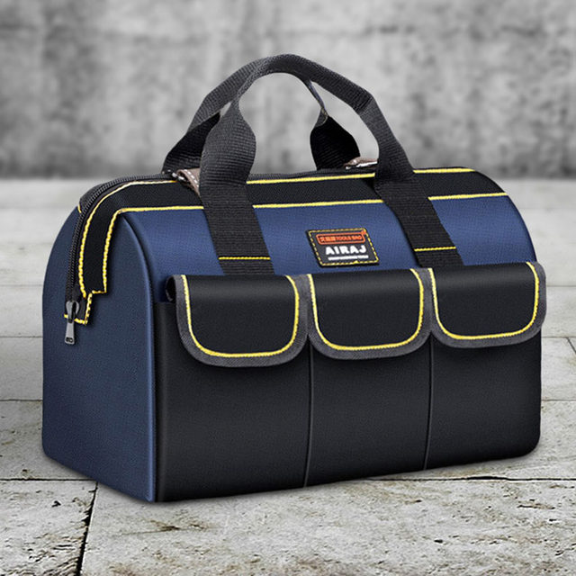
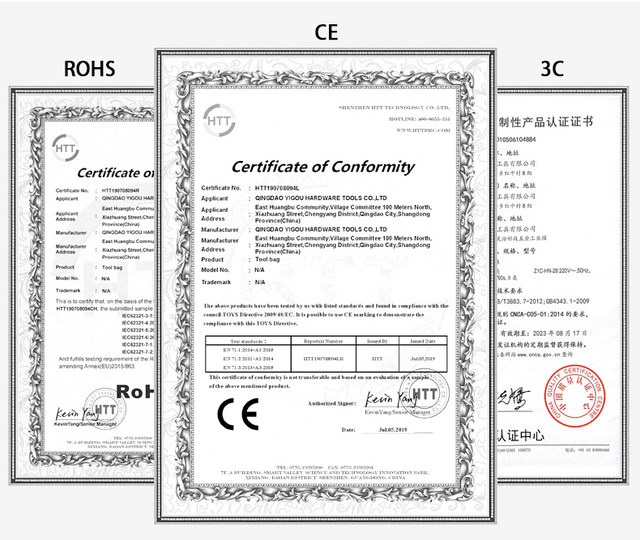


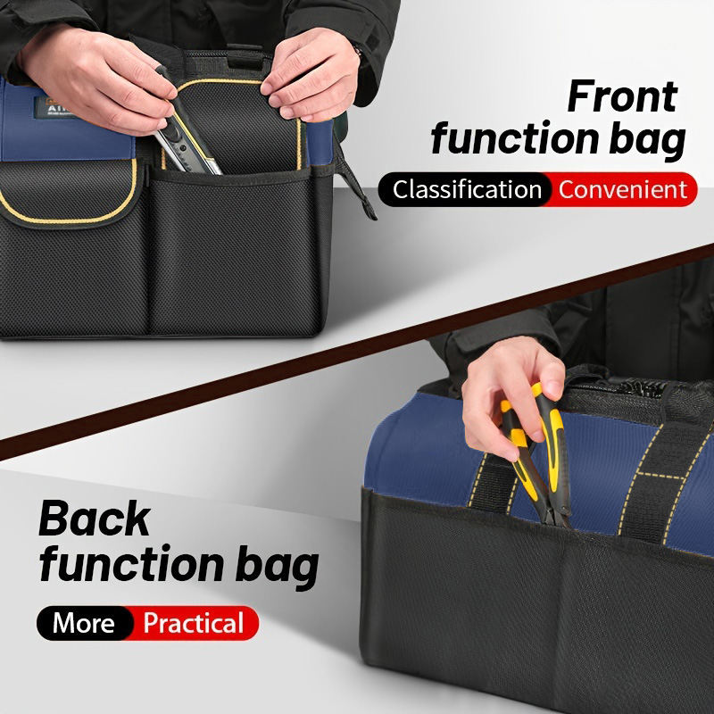
,
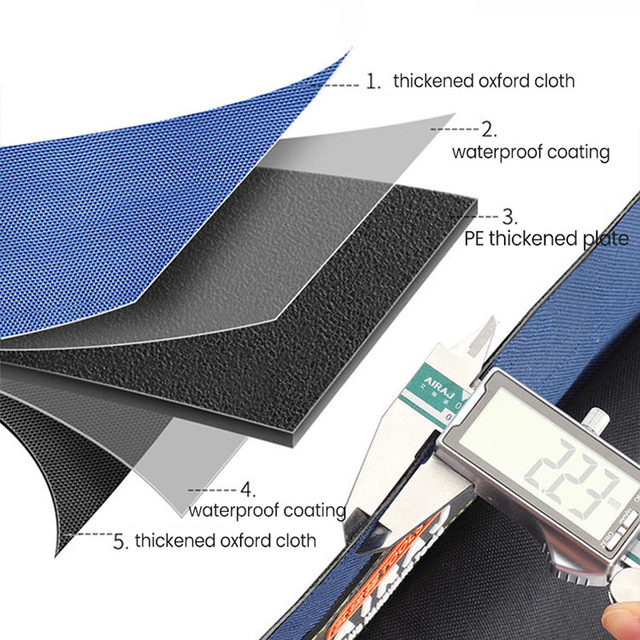
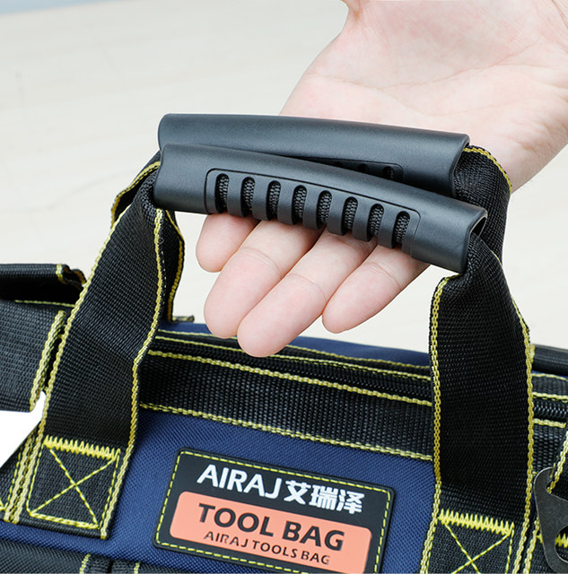
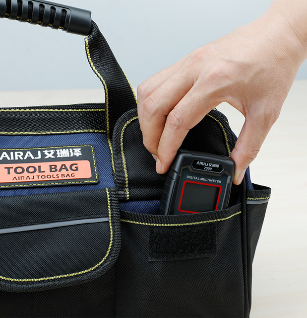
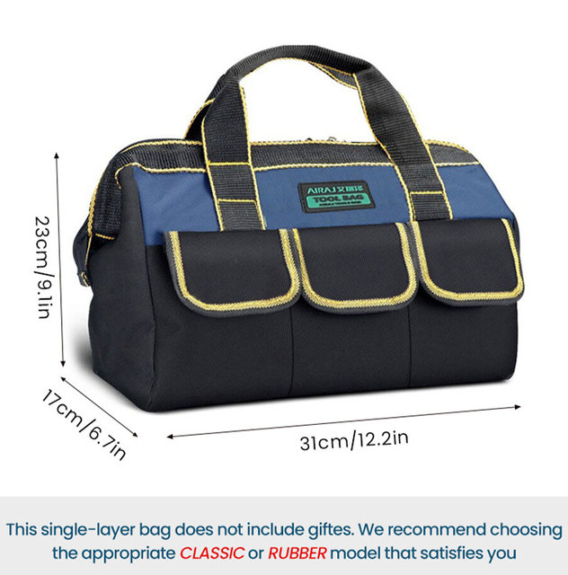
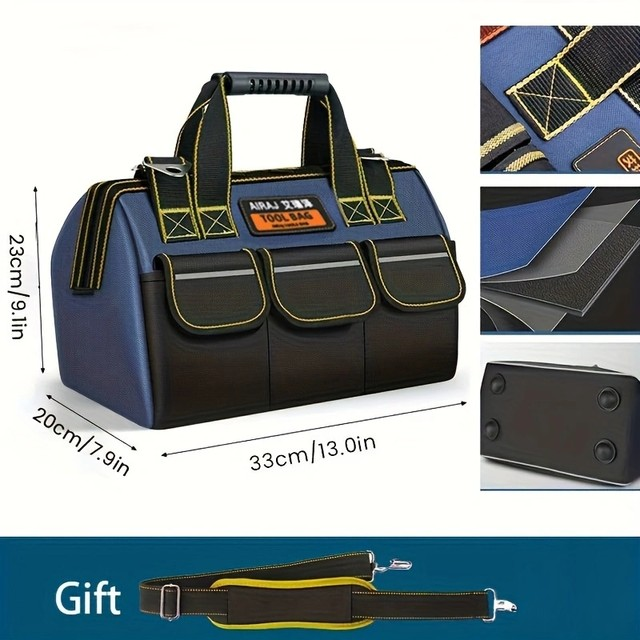
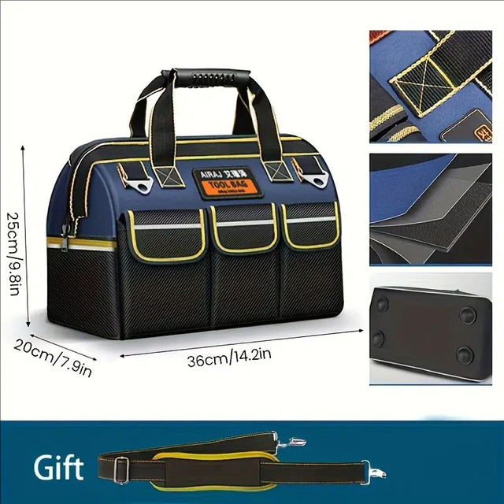
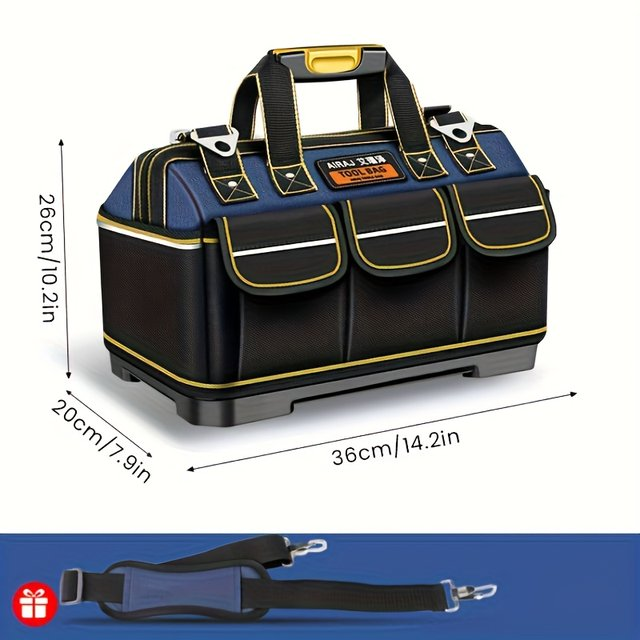
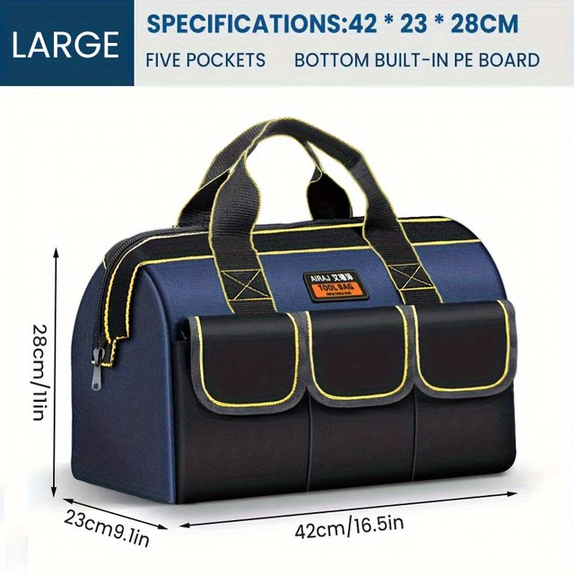
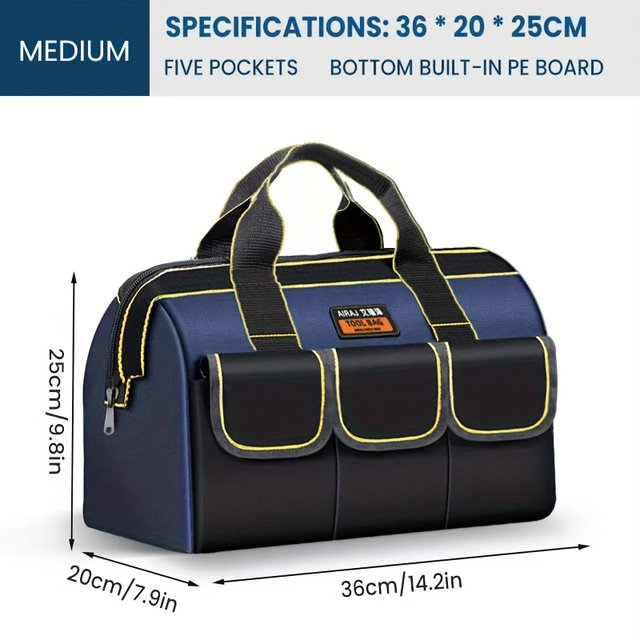
of and Wear-Resistant :Made of 1680D Oxford Cloth, these bags are waterproof and wear-resistant, ensuring that your tools and equipment stay safe and dry.
• Multifunctional :These bags are multifunctional, making them perfect for electricians, mechanics, and other professionals who need to carry a variety of tools and equipment.
• Customizable :The AIRAJ Multifunctional Tool Bags are customizable, allowing you to add your own labels and organize your tools and equipment in a way that makes sense to you.
Size:
13 inch simple:31*23*17cm
16 inch simple:36*24*19cm
18 inch simple:42*26*23cm
14 inch classic:33*23*20cm
17 inch classic:36*25*20cm
17 inch rubber:36*26*20cm
Package
13 inch simple/16 inch simple/18 inch simple : Tool Bag * 1
Chinese 14 inch classicTool Bag * 1 + Parts box * 1


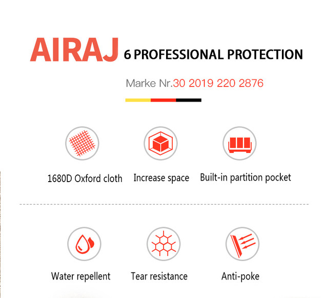
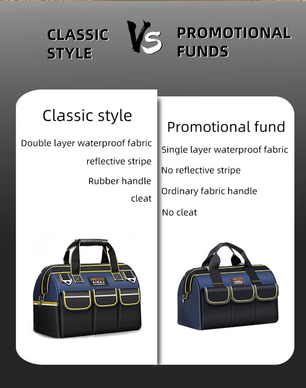

,


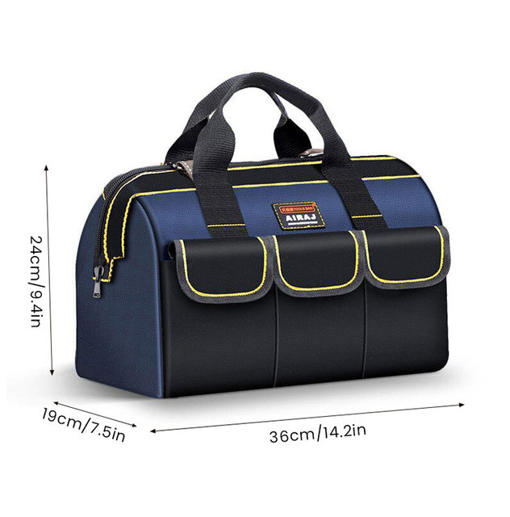
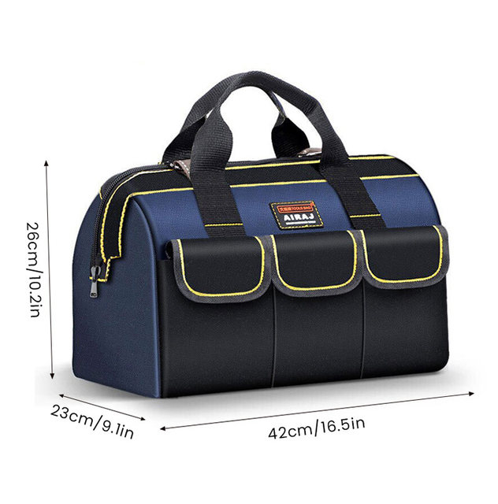
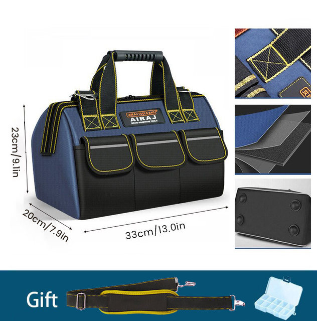
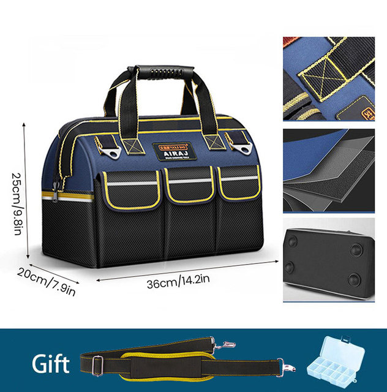
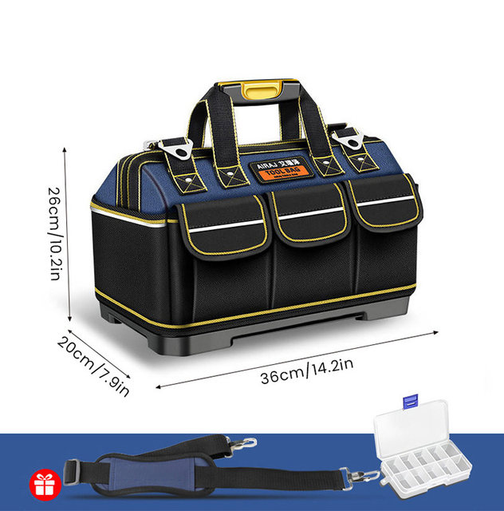